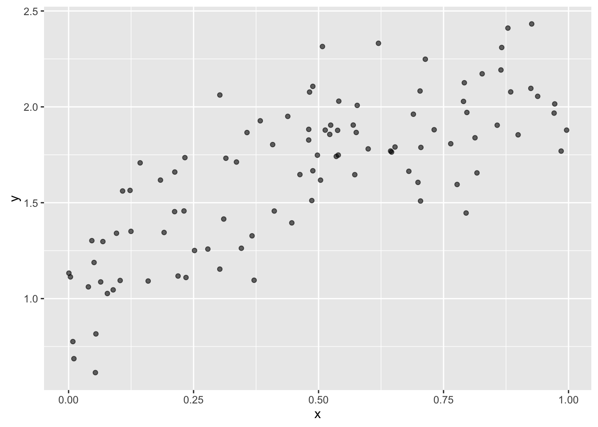

library("devtools")
library("htmltools")
library("vembedr")
library("tibble")
library("ggplot2")This document is inspired by part of Hadley’s keynote at userR! 2016, where he talks about the power of list-columns:
What I’m trying to do here is to work towards a conceptual (and coding) framework that will drive the nesting of the dataframe. BTW, this is one of the things that I find so appealing about the Tidyverse - we have a clear set concepts with which to build our ideas, and a correspondingly clear implementation in the packages to implement our ideas.
There are two levels of stuff we want to do:
Cross-validation of a particular model to get a estimate of its performance. We will do this using a number of different random train/test splits; the estimate of performance for a given model will be an aggregation of the performance of each of the splits.
Evaluation of the performance of a number of models - each model will have a different set of features. It is thought that, at first, that all of the models evaluated as a set will have the same family, i.e. lm(), but this may not always be the case, as we may be further interested in making a selection from models of different families.
Following Hadley’s example, we want to create a dataset using the “truth” and “noise” that we specify.
truth <- function(x){
1 + 2*x - x^2
}
noise <- function(x){
rnorm(length(x), sd = 0.25)
}
df <- data_frame(
x = runif(n = 100, min = 0, max = 1),
y = truth(x) + noise(x)
)ggplot(df, aes(x = x, y = y)) +
geom_point(alpha = 0.6)
session_info()## Session info --------------------------------------------------------------## setting value
## version R version 3.3.1 (2016-06-21)
## system x86_64, darwin13.4.0
## ui X11
## language (EN)
## collate en_US.UTF-8
## tz America/Chicago
## date 2016-07-16## Packages ------------------------------------------------------------------## package * version date source
## assertthat 0.1 2013-12-06 CRAN (R 3.3.0)
## colorspace 1.2-6 2015-03-11 CRAN (R 3.3.0)
## devtools * 1.12.0 2016-06-24 CRAN (R 3.3.0)
## digest 0.6.9 2016-01-08 CRAN (R 3.3.0)
## evaluate 0.9 2016-04-29 CRAN (R 3.3.0)
## formatR 1.4 2016-05-09 CRAN (R 3.3.0)
## ggplot2 * 2.1.0 2016-03-01 CRAN (R 3.3.0)
## gtable 0.2.0 2016-02-26 CRAN (R 3.3.0)
## htmltools * 0.3.5 2016-03-21 CRAN (R 3.3.0)
## knitr 1.13 2016-05-09 CRAN (R 3.3.0)
## labeling 0.3 2014-08-23 CRAN (R 3.3.0)
## lazyeval 0.2.0 2016-06-12 CRAN (R 3.3.0)
## magrittr 1.5 2014-11-22 CRAN (R 3.3.0)
## memoise 1.0.0 2016-01-29 CRAN (R 3.3.0)
## munsell 0.4.3 2016-02-13 CRAN (R 3.3.0)
## plyr 1.8.4 2016-06-08 cran (@1.8.4)
## Rcpp 0.12.5 2016-05-14 CRAN (R 3.3.0)
## rmarkdown 1.0 2016-07-08 CRAN (R 3.3.0)
## scales 0.4.0 2016-02-26 CRAN (R 3.3.0)
## stringi 1.1.1 2016-05-27 CRAN (R 3.3.0)
## stringr 1.0.0 2015-04-30 CRAN (R 3.3.0)
## tibble * 1.1 2016-07-04 cran (@1.1)
## vembedr * 0.1.1 2016-07-15 CRAN (R 3.3.1)
## withr 1.0.2 2016-06-20 CRAN (R 3.3.0)
## yaml 2.1.13 2014-06-12 CRAN (R 3.3.0)